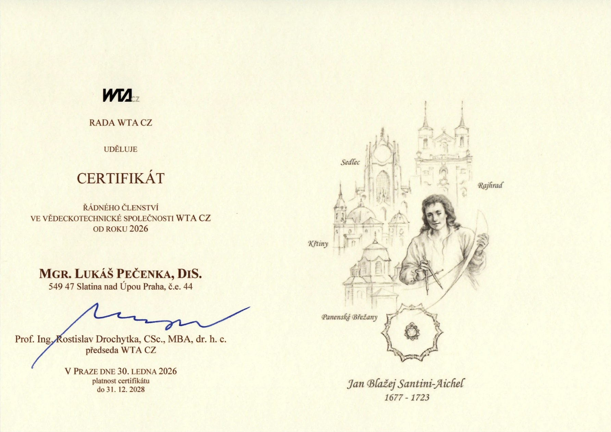

ČEMU SE VĚNUJI
Ve své profesi se dlouhodobě věnuji odstraňování vlhkosti, tedy sanacím staveb, a to nejen historického a památkového charakteru. Do mého portfolia patří objekty nebo části staveb s trvalou dotací vlhkosti — hřbitovní zdi, kostely, hradební konstrukce, soklové partie, sklepní prostory i obytné domy.
Pro zdárné vyřešení problému je nutná kombinace technologického řešení a vhodných materiálů navržená pro konkrétní stavbu. Před návrhem systémového řešení proto provádím vlhkostní průzkum, měření, posouzení zasolení, složení omítkových směsí a základní určování stáří konstrukcí.
Přednost dávám tradičním technologiím a materiálům. V náročnějších případech navrhuji jejich promyšlenou kombinaci s moderními metodami.
Autorizace Vědeckotechnické společnosti pro sanace staveb a péči o památky v oblasti sanace zděných staveb proti vlhkosti.
Odborné zkušenosti
Praxe zahrnuje projekční činnost, odborné poradenství, sanace, školení i vedení technických týmů.
- od 2006Poradenství a projekční činnost při rekonstrukcích, adaptacích a modernizacích staveb s ohledem na jejich památkovou hodnotu.
- 2012–2014MC-Bauchemie — zakládání divize Oxal v ČR, odborné poradenství, školení obchodních zástupců, sanace a rekonstrukce staveb, injektáže a speciální betonářské sanace.
- 2015–2020MC-Bauchemie — technický ředitel.
- 2017Poradenství v oboru průzkumů, sanací a odvlhčování staveb; komplexní řešení objektů včetně souvisejících terénních úprav pro KORLEN s.r.o.
CERTIFIKACE
Řádný člen WTA CZ
Od roku 2026 jsem řádným členem Vědeckotechnické společnosti WTA CZ. Certifikát mi udělila Rada WTA CZ v Praze 30. ledna 2026 a platí do 31. 12. 2028.

Přednášky a odborné vzdělávání
Sdílení zkušeností s památkáři, projektanty, realizačními firmami i správci specifických objektů.
- 2015–2017Přednáškový cyklus NPÚ v Kroměříži, Plzni, Českých Budějovicích a Ostravě — hydrofilní maltové a trasvápenné směsi a jejich použití při sanaci památek.
- 2016Veletrh Památky Praha — možnosti použití a úskalí větracích kanálů.
- 2017Rytířský řád Křižovníků s červenou hvězdou — vzduchové kanály a maltové směsi pro historické objekty. Veletrh Památky Praha — složení malt pro památky. WTA — hydrofilní malty, charakteristika a využití.
- 2018Arcibiskupství pražské — vzduchové kanály a maltové směsi pro historické objekty. WTA — nevhodné provedení a umístění větracích kanálů.
- 2019Stavební veletrhy Pardubice a Hradec Králové — možnosti a úskalí větracích kanálů.
- Odborný cyklusS projekt a zoologické zahrady Brno, Zlín, Plzeň, Olomouc, Ostrava a Hluboká — přístup k památkově chráněným objektům a jejich sanace.
- NPÚ a ORPZámek Frýdek-Místek — přehled sanačních metod a jejich vhodnost pro památkově chráněné objekty.
Z mého YouTube kanálu
Na videích ukazuji skutečné sanace a průzkumy. Videa mají dohromady přes 600 000 zhlédnutí.